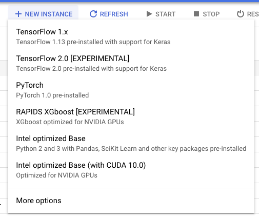

<!DOCTYPE html>
<html lang="en">
  <head>
    <meta charset="utf-8" />
    <meta name="viewport" content="width=device-width, initial-scale=1.0, maximum-scale=1.0, user-scalable=no" />

    <title>Google Colab & AI Notebook</title>
    <meta property="og:title" content="Google Colab & AI Notebook" />
    <meta property="og:type" content="website" />
    <meta property="og:image" content="https://fchouteau.github.io/tds-google-colab-demo/featured-slide.jpg" />
    <meta property="og:url" content="https://fchouteau.github.io/tds-google-colab-demo" />
    <link rel="stylesheet" href="./css/reveal.css" />
    <link rel="stylesheet" href="./css/theme/solarized.css" id="theme" />
    <link rel="stylesheet" href="./css/highlight/solarized-dark.css" />
    <link rel="stylesheet" href="./css/print/paper.css" type="text/css" media="print" />
    <link rel="stylesheet" href="./css/style.css" />

  </head>
  <body>
    <div class="reveal">
      <div class="slides"><section ><section data-markdown><script type="text/template">

# Google Colaboratory
#  & AI Notebook

## Data Science in the cloud, the easy way

Toulouse Data Science #38 - June 18th 2019

Florient CHOUTEAU

</script></section><section data-markdown><script type="text/template">

### about.md


- ML Engineer @ Airbus Defence and Space (we are hiring !)

- Training Neural Networks since 2016 

    - Remote sensing imagery

    - Delair, Magellium / Airbus Intelligence (**spoilers**), Airbus DS...

    - torch, tf, keras, pytorch, ...

- Contact: [@foxchouteau](https://twitter.com/foxchouteau) or on Slack

</script></section><section data-markdown><script type="text/template">

### Who started learning data science recently ?

</script></section><section data-markdown><script type="text/template">

### Who works in data science ?

</script></section><section data-markdown><script type="text/template">

### Who teaches data science classes ?

</script></section><section data-markdown><script type="text/template">

### TL;DR

- easy access to configured development environment for ML

- from Google but not limited to their tech

- jupyter-based products

- one free, one paid: different use cases, similar principles

</script></section><section data-markdown><script type="text/template">

### Disclaimer

This talk is not sponsored by Google ;)

There may be better alternatives: Feel free to comment after :)

Have you heard of the "demo effect" ?

</script></section></section><section ><section data-markdown><script type="text/template">

## Colaboratory

https://colab.research.google.com


</script></section><section data-markdown><script type="text/template">


</script></section><section data-markdown><script type="text/template">

### WTF is... Google Colab ?

- Jupyter Notebook + Google Drive

- Full python data science environment

- 12h max session lifetime

</script></section><section data-markdown><script type="text/template">

### Is it for YOU ? 

- Students, people learning ML/DS

- Teachers, share courses, get assignments

- Quick experiments / sharing 

</script></section><section data-markdown><script type="text/template">

### Nice features

- Can use your data: gdrive, gsheet, local filesystem

- Jupyter-based: All the power of interactive & visualisations

- You can `apt-get` and `pip install` what you need

</script></section><section data-markdown><script type="text/template">

### Nicer features

- GPU ! (Nvidia Tesla T4, 16 GB GPU RAM = 3000$)

- Collaboration ! (share and co-edit notebooks)

- Open notebook from github to colab ! 

</script></section><section data-markdown><script type="text/template">

### Demo Time

- End-to-end training w/ GPU. pytorch and ignite (**spoilers**)

- Notebook on github, Data on Google Drive

- https://colab.research.google.com

</script></section><section data-markdown><script type="text/template">

### Limitations

- Long calculations w/ guarantees

- Full control over installation and data


</script></section></section><section ><section data-markdown><script type="text/template">

## GCP Deep Learning VM / AI Platform Notebook

https://cloud.google.com/deep-learning-vm/


</script></section><section data-markdown><script type="text/template">

### WTF is... AI Platform Notebook ?

- Pre configured **paid** Cloud Virtual Machines (Google Compute Engine)

- With jupyter lab auto launched & ready

- Papermill pre installed for scheduling

</script></section><section data-markdown><script type="text/template">

### Available configurations



</script></section><section data-markdown><script type="text/template">

### 2 different workflows

1. Jupyter only ("AI Notebook")

2. Pre-configured instance for Data Science ("Deep Learning VM")

</script></section><section data-markdown><script type="text/template">

### Demo 1: "AI Platform Notebook"

- Creating an instance

- Connecting to jupyter lab (with or without ssh !)

https://console.cloud.google.com

</script></section><section data-markdown><script type="text/template">

### Demo 2: "Deep Learning VM"

- Using the DL VM as a preconfigured headless code runner

- Executing a notebook on a deep-learning-vm

```
INPUT_NOTEBOOK="gs://fchouteau-storage/ai-notebook-demo.ipynb"
GCP_BUCKET="gs://fchouteau-storage/runs"
IMAGE_FAMILY_NAME="pytorch-latest-gpu"
INSTANCE_TYPE="n1-standard-8"
GPU_TYPE="k80"
GPU_COUNT=1
ZONE="europe-west1-b"

execute_notebook -i "${INPUT_NOTEBOOK}" \
                 -o "${GCP_BUCKET}" \
                 -f "${IMAGE_FAMILY_NAME}" \
                 -t "${INSTANCE_TYPE}" \
                 -z "${ZONE}" \
                 -g "${GPU_TYPE}" \
                 -c "${GPU_COUNT}"
```

</script></section><section data-markdown><script type="text/template">

### Advanced Usage (not covered here)

- [Extensive tutorial](https://towardsdatascience.com/how-to-use-jupyter-on-a-google-cloud-vm-5ba1b473f4c2)

- Use "preemptible" (spot in AWS terminology)*

- CLI creation for more customization

- Scheduled notebooks execution w/ papermill

*5x less expensive, run only 24h

</script></section></section><section ><section data-markdown><script type="text/template">

## Conclusion

</script></section><section data-markdown><script type="text/template"> 

### TL;DR (bis)

 <table style="width:100%">
  <tr>
    <th>Google Colab</th>
    <th>Google AI Notebook</th>
  </tr>
  <tr>
    <td>Learn, experiment </td>
    <td>Can scale compute</td>
  </tr>
  <tr>
    <td>Single notebook / Clone from github</td>
    <td>Upload own code</td>
  </tr>
  <tr>
    <td>Simple jupyter env.</td>
    <td>Full jupyter lab or SSH access</td>
  </tr>
  <tr>
    <td>Data from anywhere / google drive</td>
    <td>Fully owned cloud environment</td>
  </tr>
  <tr>
    <td>Short runtimes</td>
    <td>Cheap 1d runtimes or arbitrary runtimes</td>
  </tr>
  <tr>
    <td>**free**</td>
    <td>**[paid](https://cloud.google.com/compute/pricing)** (by minute of computing + storage)</td>
  </tr>
</table> 

</script></section><section data-markdown><script type="text/template">

### Alternatives

- [Kaggle Kernels](https://www.kaggle.com/kernels): for kaggle, colab, free, 9h, P100

- [Amazon Sagemaker](https://aws.amazon.com/sagemaker/): can someone tell me about it ?

- A lot of smaller entities... [floydhub](https://www.floydhub.com/)...

- Build your own machine ? opinion: last step for individual use (be sure of what you need !)

</script></section><section data-markdown><script type="text/template">

### Thank you ! </script></section></section></div>
    </div>

    <script src="./lib/js/head.min.js"></script>
    <script src="./js/reveal.js"></script>

    <script>
      function extend() {
        var target = {};
        for (var i = 0; i < arguments.length; i++) {
          var source = arguments[i];
          for (var key in source) {
            if (source.hasOwnProperty(key)) {
              target[key] = source[key];
            }
          }
        }
        return target;
      }

      // Optional libraries used to extend on reveal.js
      var deps = [
        { src: './lib/js/classList.js', condition: function() { return !document.body.classList; } },
        { src: './plugin/markdown/marked.js', condition: function() { return !!document.querySelector('[data-markdown]'); } },
        { src: './plugin/markdown/markdown.js', condition: function() { return !!document.querySelector('[data-markdown]'); } },
        { src: './plugin/highlight/highlight.js', async: true, callback: function() { hljs.initHighlightingOnLoad(); } },
        { src: './plugin/zoom-js/zoom.js', async: true },
        { src: './plugin/notes/notes.js', async: true },
        { src: './plugin/math/math.js', async: true }
      ];

      // default options to init reveal.js
      var defaultOptions = {
        controls: true,
        progress: true,
        history: true,
        center: true,
        transition: 'default', // none/fade/slide/convex/concave/zoom
        dependencies: deps
      };

      // options from URL query string
      var queryOptions = Reveal.getQueryHash() || {};

      var options = extend(defaultOptions, {"transition":"fade","transitionSpeed":"default","controls":false}, queryOptions);
    </script>


    <script>
      Reveal.initialize(options);
    </script>
  </body>
</html>
